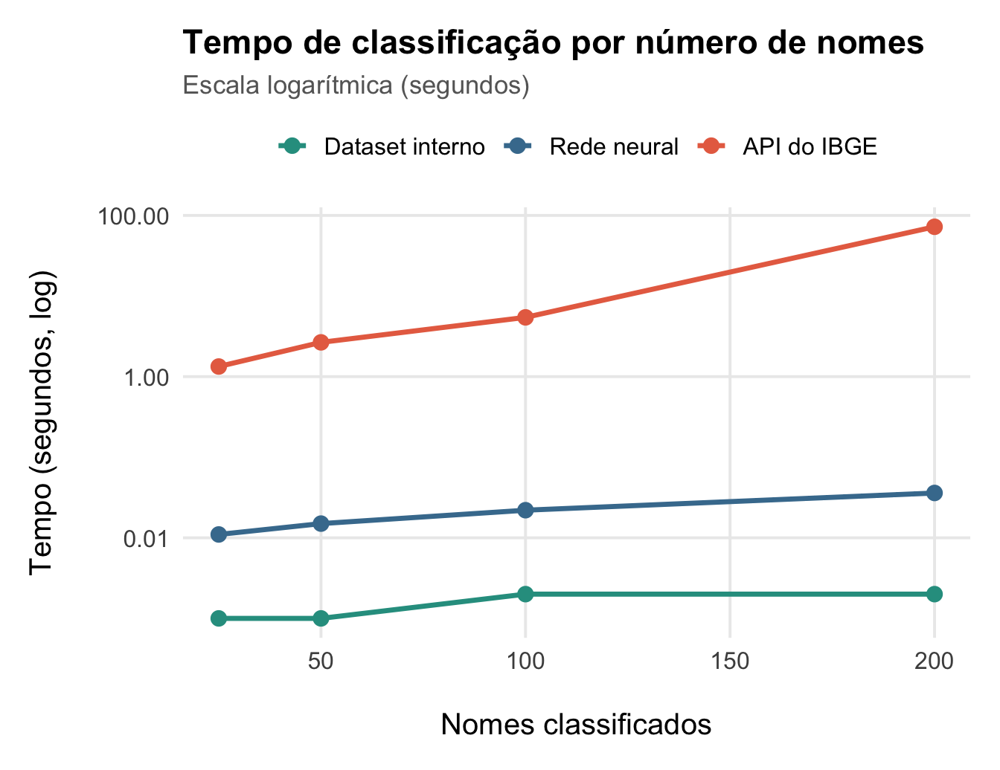

install.packages("genderBR")genderBR v1.3.0
Classificação de sexo a partir de nomes próprios brasileiros
R
Pacote
Saber o sexo de uma pessoa – ou, mais precisamente, sexo biológico burocraticamente atribuído ao nascer – é uma informação útil para pesquisa aplicada em várias áreas. Com ela, é possível quantificar fenômenos como a diferença salarial média entre homens e mulheres; presença de mulheres em espaços de decisão; concentração de mulheres em determinadas áreas do conhecimento; e assim por diante. Um problema maior, contudo, frequentemente impede essas análises: ausência de informações.
Bases de dados como a de filiados a partidos no Brasil, ou a de sócio de empresas mantida pela Receita Federal, registram o nome das milhares das pessoas nelas incluídas, mas não a informação seus sexos informados. No Brasil, assim como em outros países, primeiros nomes guardam marcados que permitem inferir a informação: convencionalmente, Maria é um nome considerado feminino; João, masculino. Se tivermos nomes de pessoas, mas não seus sexos, podemos classificar manualmente aqueles para atribuir a informação faltante. Se nossa base tiver milhares ou milhões de registros, no entanto, o problema persiste.
Foi para resolver esse problema que, em 2017, surgiu o pacote para R genderBR. Sua proposta é bem simples: ele imputa uma classificação de sexo binária a partir de nomes próprios. Para tanto, usa dados do Censo do IBGE, que armazena a contagem de pessoas de cada sexo no país com determinado nome, o que garante cobertura para quase totalidade dos primeiros nomes usados pela população brasileira.
Desde então, o pacote acumula 43 mil downloads no CRAN e quase 80 citações no Google Scholar. Mesmo assim, ele tinha a limitação de não conseguir classificar nomes não contidos na base do Censo de 2010 – o que significava que, no mais das vezes, cerca de 5% de nomes classificados em tarefas comuns ficavam de fora.
Atualização: v1.3.0
Na sua nova versão, lançada em março deste ano e já disponível no CRAN (o principal repositório de pacotes para R), o genderBR inclui duas grandes novidades:
- Incorporação dos dados do Censo de 2022, atualizando a contagem de usos de cada um dos 123733 primeiros nomes no Brasil utilizados por mais de 20 pessoas;
- Adição de um modelo de aprendizado profundo, treinado em cima de todos os 141742 próprios contidos nas bases dos Censo de 2010 e de 2022, para fazer a classificação de sexo binária – o que permite generalizar a classificação para nomes não contidos nas bases do Censo.
Com o R aberto, a nova versão do pacote pode ser instalada com:
O que o genderBR faz
O genderBR imputa uma classificação binária de sexo a partir de nomes próprios brasileiros usando dados dos Censos do IBGE de 2010 e 2022. A base interna do pacote cobre mais de 142 mil nomes únicos. A função principal, get_gender, recebe um nome (ou um vetor de nomes) e retorna a predição:
library(genderBR)
nomes <- c("Guilherme", "Maria", "Ana", "Arnaldo", "Martha", "Carlos")
get_gender(nomes)[1] "Male" "Female" "Female" "Male" "Female" "Male" Por padrão, a função usa os dados internos do pacote (internal = TRUE), o que permite predições offline quase instantaneamente – mesmo para bases grandes. Para retornar a probabilidade de um nome ser usado por uma pessoa do sexo feminino (de acordo com dados do Censo de 2022 e, quando indisponíveis, do Censo de 2010), bastar usar prob = TRUE:
get_gender(nomes, prob = TRUE)[1] 0,007027704 0,995115136 0,995264457 0,002405403 0,996589940 0,004324201Também é possível escolher qual Censo usar para obter as probabilidades:
get_gender(nomes, prob = TRUE, year = 2010)[1] 0,007510383 0,996643040 0,996721856 0,002919058 0,995692666 0,004076039Ampliando a classificação de nomes
Apesar da cobertura ampla dos dados do Censo, se um nome não está na base, não há como classificá-lo. Portanto, nomes com grafias incomuns, nomes estrangeiros, nomes adaptados ou raros ficavam de fora ao usar a versão anterior do genderBR para atribuir sexo biológico a nomes brasileiros.
Para contornar o problema, a nova versão do pacote inclui uma rede neural treinada nos dados do IBGE, o que permite generalizar a classificação de sexo para nomes que não estão nos dados do Censo. Um exemplo: o nome Zusjane não existe no Censo do IBGE.
get_gender("Zusjane")[1] NAAo usar a função get_gender, nenhuma classificação é atribuída. Com a rede neural, habilitada com o argumento nn = TRUE, o pacote faz a classificação:
get_gender("Zusjane", nn = TRUE)[1] "Female"get_gender("Zusjane", nn = TRUE, prob = TRUE)[1] 0,9993508Por detrás dos panos, o modelo usado para fazer a classificação é um Gated Recurrent Unit (GUR) bidirecional que opera no nível do caractere – isto é, o modelo lê cada nome letra por letra e aprende padrões associados a nomes considerados femininos e masculinos, de acordo com dados dos Censos. Treinado em todos os 142 mil nomes do IBGE, o modelo consegue 96,5% de acurácia nos dados de teste. Os pesos do modelo estão disponíveis no Hugging Face e são baixados automaticamente pelo pacote no seu primeiro uso.
Desempenho: três backends, três velocidades
O genderBR oferece três formas de classificar nomes: dados do Censo (armazenados internamente no pacote para uso offline e otimizados para consultas rápidas); a nova rede neural (método offline, rápido); e a API do IBGE (método online, mais lento). Para ilustrar as diferenças de performance, o código abaixo cronometra a classificação de 20 nomes com cada método:
nomes20 <- c(
"Joao", "Maria", "Pedro", "Ana", "Lucas",
"Juliana", "Gabriel", "Fernanda", "Rafael", "Camila",
"Bruno", "Patricia", "Carlos", "Larissa", "Felipe",
"Beatriz", "Gustavo", "Aline", "Rodrigo", "Mariana"
)
t_interno <- system.time(get_gender(nomes20, internal = TRUE))["elapsed"]
t_nn <- system.time(get_gender(nomes20, nn = TRUE))["elapsed"]
t_api <- system.time(get_gender(nomes20, internal = FALSE))["elapsed"]
tibble(
Método = c("Dataset interno", "Rede neural", "API do IBGE"),
`Tempo (segundos)` = c(t_interno, t_nn, t_api)
) |>
knitr::kable(digits = 4)| Método | Tempo (segundos) |
|---|---|
| Dataset interno | 0,002 |
| Rede neural | 0,011 |
| API do IBGE | 1,339 |
Como se vê, tanto usar dados internos (internal = TRUE, o padrão) quanto usar a rede neural (nn = TRUE) leva frações de segundo, ao contrário de usar o serviço online do IBGE.
Ganhos de escala no método interno são grandes porque ele consome quase o mesmo tempo para predizer o sexo de 100 ou de 10 mil nomes. Com a API do IBGE, por outro lado, o tempo cresce de forma linear: cada nome exige uma requisição, e cada requisição leva uma fração de segundo.
Considerando tarefas de classificação de diferentes tamanhos – classificar 25, 50, 100 ou 200 nomes –, as diferenças de tempo são ainda mais evidentes (note que foi necessário usar uma escala escala logarítmica para visualizar melhor as diferenças):

Mesmo ao classificar 200 nomes, dados internos e rede neural levam fração de segundo, enquanto que o serviço online do IBGE passa a gastar quase dois minutos. Apesar disso, ao classificar milhares ou milhões de nomes a rede neural consome muita memória do computador, podendo travar ou interromper a execução.
A recomendação geral, portanto, é sempre usar dados internos do Censo e, quando nomes a serem classificados não estiverem contidos neles, usar a rede neural com nn = TRUE.
Funciona? Uma validação
O uso do genderBR já foi validado outras vezes, e por diferentes pesquisadores, mas a nova rede neural é uma adição importante que não foi testada. Para dar uma ideia da sua utilidade, apliquei o pacote para classificar todas os 463681 candidatos e candidatas que disputaram as eleições municipais de 2024, usando os dados do TSE.
O procedimento adotado foi o seguinte: primeiro, usei a função get_gender para pegar a probabilidade dos nomes serem femininos usando o dataset interno do pacote, o que é rápido e cobre a maioria dos nomes brasileiros; depois, usei a rede neural para obter a probabilidade dos nomes que ficaram sem classificação, ou seja, aqueles ausentes da base do Censo. Isso feito, usei duas formas de classificação dos nomes: se a probabilidade de um nome ser feminino for maior que um threshold (e.g., 0,5 ou 0,9), o nome foi classificado como Feminino; se a probabilidade for menor que o threshold, o nome foi classificado como Masculino; e se a probabilidade estiver entre os dois limites, o nome foi classificado como Desconecido. Por fim, comparei o resultado das classificações com o sexo autodeclarado pelos próprios candidatos e candidatas a título de validação.
O processo de classificação de quase meio milhão de candidatos levou apenas 0,8 segundos para o método baseado no Censo e 1,6 segundos para a rede neural, que classificou 13646 nomes não contidos no Censo. Os resultados são os que seguem.
| Classificação | Threshold | Acurácia | Cobertura |
|---|---|---|---|
| Censo | 0,5 | 99.0% | 97.1% |
| Censo | 0,6 | 99.2% | 96.5% |
| Censo | 0,7 | 99.4% | 96.1% |
| Censo | 0,8 | 99.6% | 95.5% |
| Censo | 0,9 | 99.7% | 94.6% |
| Rede neural (faltantes) | 0,5 | 89.5% | 100.0% |
| Rede neural (faltantes) | 0,6 | 90.4% | 97.3% |
| Rede neural (faltantes) | 0,7 | 91.4% | 94.6% |
| Rede neural (faltantes) | 0,8 | 92.5% | 91.3% |
| Rede neural (faltantes) | 0,9 | 93.8% | 85.9% |
| Combinado | 0,5 | 98.7% | 100.0% |
| Combinado | 0,6 | 99.0% | 99.4% |
| Combinado | 0,7 | 99.2% | 98.9% |
| Combinado | 0,8 | 99.4% | 98.2% |
| Combinado | 0,9 | 99.5% | 97.1% |
Comentários:
Usar apenas dados internos, do Censo, já dá mais de 99% de acurácia na predição de sexo a partir de nomes próprios brasileiros, mas a cobertura do método é limitada: se considerarmos como feminino ou masculino apenas os nomes com probabilidade de serem femininos ou masculinos maior que 0,9, por exemplo, conseguimos classificar apenas 94,6% de todos os nomes. O restante é missing.
A rede neural, por sua vez, classifica todos os nomes não classificados pelo método anterior quando usamos um threshold de 0,5. A acurácia, contudo, é menor do que a do método baseado no Censo: 89,5% dos nomes classificados pela rede neural estavam corretos. Dado que estes são nomes raros, que não estão na base do Censo e que, portanto, o modelo nunca os viu antes, o resultado é bom. Ao aumentar o threshold, a acurácia sobe, mas a cobertura cai ligeiramente.
Se combinarmos os dois métodos – i.e., classificamos todos os nomes com dados internos, depois classificamos apenas nomes faltantes com a rede neural –, conseguimos o melhor dos dois mundos: alta acurácia (98,7% com threshold de 0,5) e cobertura total, de 100% dos nomes.
Dados do TSE são autopreenchidos, então é possível que haja erros de digitação ou grafias incomuns, além de declarações de sexo erradas. Conseguir 99% de acurácia e cobertura total, nesse caso, pode ser antes um piso do que um teto para o desempenho do
genderBR.
E quais casos a rede neural errou? A tabela abaixo mostra 10 destes sorteados ao acaso. Como se pode ver, não são nomes fáceis de classificar nem mesmo para humanos.
| Nome | Sexo declarado | Prob. feminino (NN) |
|---|---|---|
| Durcinei | Masculino | 0,668 |
| Markesnane | Masculino | 0,970 |
| Ladislê | Masculino | 0,996 |
| Kericlis | Masculino | 0,652 |
| Gelcioni | Feminino | 0,104 |
| Oquemiler | Masculino | 0,608 |
| Elionenai | Masculino | 0,851 |
| Jusecleide | Masculino | 0,999 |
| Orda | Feminino | 0,306 |
| Waldirez | Masculino | 0,501 |
Uso responsável
O genderBR infere sexo, de forma binária,a partir de nomes. Essa classificação binária, derivada de convenções de nomeação e registro de crianças ao nascer, no entanto, certamente não reflete a complexidade das identidades de gênero, tampouco suas mudanças ao longo da vida das pessoas. Por isso mesmo, ao usar o pacote deve-se ter em mente que impor classificações binárias a indivíduos ou grupos pode resultar em danos ou discriminação a estes.
O melhor uso acadêmico do pacote é o de estimar proporções de mulheres e homens em populações agregadas, apenas para fins de estudo de fenômenos sociais que, sem o pacote, ficariam sem análise. Em outras palavras, considere o pacote como um último recurso, a ser usado apenas quando na ausência de dados autorreportados e quando inferi-lo a partir de nomes próprios não oferece risco às pessoas estudadas.
Links e citações
O pacote é open source e sua documentação e código estão disponíveis em:
Para usar o genderBR em publicações acadêmicas, obtenha as referências bibliográficas do pacote com:
citation("genderBR")To cite package 'genderBR' in publications use:
Meireles F (2026). _genderBR: Predict Gender from Brazilian First
Names_. doi:10.32614/CRAN.package.genderBR
<https://doi.org/10.32614/CRAN.package.genderBR>, R package version
1.3.0, <https://CRAN.R-project.org/package=genderBR>.
A BibTeX entry for LaTeX users is
@Manual{,
title = {genderBR: Predict Gender from Brazilian First Names},
author = {Fernando Meireles},
year = {2026},
note = {R package version 1.3.0},
url = {https://CRAN.R-project.org/package=genderBR},
doi = {10.32614/CRAN.package.genderBR},
}